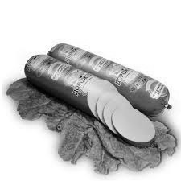

2. Sausage

Recipe for making sausage
Ingredients:
- 2 pounds (about 900 grams) of ground meat (such as pork, beef, or a combination)
- 1/4 cup ice water
- 1/2 teaspoons salt
- 1/2 teaspoon freshly ground black pepper
- 1/2 teaspoon garlic powder (or minced fresh garlic)
- 1/2 teaspoon onion powder (or finely chopped onions)
- 1/2 teaspoon dried herbs (such as thyme, sage, or rosemary) - optional
- Natural sausage casings, soaked in water (if making link sausages)
- Cooking oil (for pan-frying or grilling)
Steps:
- Start with cold, freshly ground meat. You can either grind your meat using a meat grinder or buy ground meat from your local butcher.
- Ensure that the meat is well-chilled; this makes it easier to work with.
- In a large mixing bowl, combine the ground meat, ice water, salt, black pepper, garlic powder, onion powder, and any optional herbs you'd like to use.
- Mix the ingredients thoroughly until the seasoning is evenly distributed throughout the meat. You can use your hands or a mixer with a paddle attachment.
- To check the seasoning, cook a small portion of the sausage mixture in a pan and taste it. Adjust the seasonings if needed.
- If you want to make link sausages, carefully thread the natural sausage casings onto a sausage stuffer or a sausage attachment for a meat grinder. Rinse the casings thoroughly with water to remove any excess salt.
- Stuff the meat mixture into the casings, leaving a little space at the ends for twisting or tying.
- If you're making patties or loose sausage, shape the seasoned meat mixture into patties or simply leave it loose for ground sausage.
- Heat a skillet or frying pan over medium heat with a little cooking oil. Add the sausages and cook until they're browned on all sides and cooked through. This usually takes about 10-15 minutes.
- Once your sausages are cooked to your liking, remove them from the heat.
- Serve your homemade sausages hot with your favorite accompaniments, such as mustard, sauerkraut, or freshly baked bread.